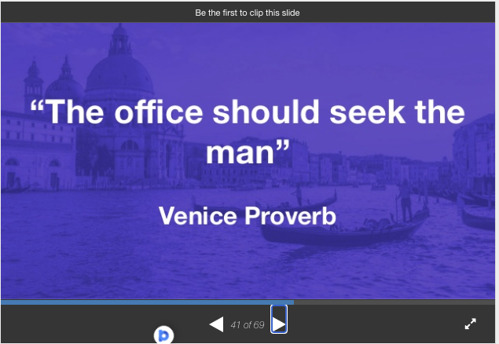

Source: Sortition in the History of Democracy, Slide 41.Cross-posted from The Mandarin:
Our world has been optimised to within an inch of its life. Usually from the top down. With the economic, social and organisational prizes accumulating more and more to those at the top, there’s growing anxiety to get on – not to be left behind. Kids going for scholarships are advised to craft a ‘TED talk’ style mission they’re ‘passionate’ about and a CV to match.
Careerism is rife. And that’s bad news for the culture of our institutions and organisations – both public and private – which should function as collective entities first and as vehicles for individual careers second. The more workplaces must cultivate a network of creative collaboration, the more intrinsic motivation in doing the job itself matters, the more careerism is a threat. Even more so for in the public and third sector which can’t easily benchmark their performance against competitors and can’t gauge the value of their output by how much customers pay.
With these things on my mind I recently discovered a simple mechanism that might help resist the cancer of careerism. It’s easily engineered, and yet we’ve rarely had the wit to even consider it. It’s a form of ‘roundabout’ production just like markets are. Let me explain.
In a market, buyer and seller have conflicting interests. This was seen as a problem by pre-modern economic thinkers. The breakthrough in Adam Smith’s thinking in the eighteenth century was to develop the intimations of people like Mandeville and Hutchinson that the alchemy of the market could turn private vice into public virtue. In other words, in the right circumstances – in a well functioning market – the inherent conflict of interest between buyer and seller is a feature not a bug. That’s because it simultaneously faces both buyer and seller with the Spice Girls question: Tell me what you want, what you really really want.
The buyer must determine for how much he wants the item while the seller determines how much he wants to sell it – compared with all the alternatives. Voila, this ‘roundaboutness’ miraculously resolves a vast number of questions about who should be doing what. If the long list of pre-conditions for market efficiency are met, market participants need not trouble themselves with knowing anything of each other – or indeed of many other things. When markets work there’s nothing that comes close to the efficiency and fairness with which they solve certain kinds of problems.
Now let's turn our attention to leadership.
Consider the extent to which we 'choose' our leaders in response to their self-assertion. At least we know they want the job, but in the first place that might not be such a recommendation for them even in principle. But what of all the leadership talent out there that finds self-assertion irksome? Introverts, those focused on giving not taking, who avoid aggression and confrontation? Those motivated by the intrinsic satisfaction of their work? Women? Those from minorities?
That's why I was so excited to learn of the round-about process used by the Citizen's Jury that deliberated on whether South Australia should establish a nuclear waste processing industry.
Towards the end of the process the organisers wanted the group to choose spokespeople. So they asked for volunteers. Plenty of people put their hand up. And then they used what they called "a double randoming technique". It went like this:
- They asked the Jury who was keen to present to the Premier. Those individuals stood in their seats.
- They then asked the third person to those people's left to also stand – and the original self-identified leaders to resume their seat.
- They then took this now standing new group to a new room – while the Jury got on with their report writing. This group comprising "about 12-15" became the 'Selecting Group'.
- The organisers then ran a small ‘workshop’ to get them to decide the criteria by which “juror advocates” – spokespeople – would be selected.
- After a period of brainstorming the group agreed five criteria. A juror advocate should:
- hold no strongly held views regarding the decision the jury had made
- be able to listen to others - so they would have been able to recount ‘what they heard’ as opposed to ‘what they thought’
- be an articulate, powerful communicator
- be confident in their communication
- be respectful and shown respect for others over the previous 6 days of proceedings.
- The Selecting Group's next task was to agree (in groups of 2 and 3) on 6 jurors who met the agreed criteria.
- Once the group was agreed, they joined the rest of the jurors who continued working away, and quietly informed those who'd been selected and asked if they'd do the job.
- The chosen ones then planned the required presentation to the Premier and, with its job done, the Selection Group stepped away. The organisers helped the newly identified spokespeople with their new advocacy task.
- Later this process was explained to the entire jury who approved of it.
As the organisers email to me put it "our chosen people were amazing. Truly balanced, respectful and honest".
Self-assertion is becoming progressively more integral to career and other worldly advancement in our world. I recall my father after accepting one job, refusing, out of a sense of obligation, to take another one offered him shortly afterward. As recently as 2003 corporate figures like Stan Wallis turned down a $1.6 million retirement payment from AMP given its then stricken state. That kind of recognition of obligations to others and to institutions today would seem almost like an AFL player refusing to take a free kick because it had been wrongly awarded. Indeed, over my own lifetime, the simple, commonsensical solidarity of workmates has long given way to careerism and managerial manipulation.
In such a world, selecting our leaders in this more 'roundabout' way which more or less cuts self-assertion off at the knees, could offer a desperately needed balm to our institutions and organisations; a way to demonstrate that managers want to put employees intrinsic motivation in a job well done at the very centre of workplace practices.
And imagine if we started finding ways to inject more of this kind of spirit into our political leadership, mired as it is today in the tawdry cycles of increasing disappointment as we invite our leaders to mis-lead us with their promises - with their self-assertion - and then turn on them, as if the fault was all theirs.
Imagine what leadership roles elsewhere might be filled from the same repertoire, in our schools, our universities, our bureaucracies and our businesses. Of course it wouldn’t suit every leadership position. But it should surely form part of the repertoire for any organisation wanting to encourage a culture in which people think of the organisation and of others within it – no matter how senior, no matter how powerful or well connected – first, rather than as an afterthought and as the price of ‘getting on’.
As our elites endlessly intone the concept of "leadership" while our world continues to fracture into social and economic insiders and outsiders, the general populace's trust in elites and leaders continues its deathly slide. In these circumstances, used wisely, leadership without self-assertion might help heal our world, making our workplaces less careerist and self-centred, more focused on the quality and productivity of the work itself.
I like the idea of a contributory process rather than a successive-filters one.
Too often these systems are described in terms of ever-narrowing groups of survivors. First, acceptable to the owners/managers. Those who are now get passed to the employees who filter out the ones they don't like. Then the next group get to further winnow the survivors. And so on, until there's only one (or none!) left. This leads to "we can't have this extra requirement, it will eliminate everyone"... so the consideration is dropped altogether.
I would love to see more accumulation of factors to consider, and a working-together rather than against or independently. One variation I've used in another context is that instead of "filter A" people getting together, then "filter B" people working separately, we put one from each filter in each group. That requires a certain amount of goodwill, and as Stephen Oliver put it recently "for people to realise equality, they are to realise they are in no way better". It can work amazingly when groups gel, and most groups usually come up with good compromise suggestions.
Often even just having to explain is enough (this may be why leaders so often hate press conferences). When filter X has to say out loud "we know filter Y is important, but we eliminated everyone who could pass it anyway" it sounds ridiculous. It sounds way too much like "I can't do my job".
sortition to get juries to choose leaders is a good idea. We should use them for high-level bureaucrats.
Careerism as a phenomenon is indeed a drain on wellbeing: it does not just glorify rent-seeking, but it also puts a lot of mental pressure on everyone because it reduces the number of ways in which people can achieve a life seen as worthwhile by others. Pride in the job, the beauty of creating something, the camaraderie of team work, the thrill of trying: these all get downgraded to the realm of losers. It is that which is probably the worst effect.
But pushing back against this major cultural change is not easy. Perhaps you are right that one can start with the top and hope a different culture then spreads. Perhaps we should think of reforms at school. The obvious problem is that the top has every incentive to support careerism (it glorifies them) and no incentive to work against it.
So once again you find yourself with a topic on which the lower levels of the bureaucracies that you talk to will cheer you on, but where the boss will quietly think 'wannabee', shrug his shoulder, and kill it off quietly. Perhaps you should more openly embrace your rebel persona and start/join a political party?
Thanks Moz,
Interesting perspective.
I also cavil every time I see a traditional method of 'weighting' for characteristics. You know the kind of thing. 10% for presentation, 20% for knowledge of his field, 30% for leadership potential (whatever that might mean) and 40% for past track record.
It's so artificial. You're really trying to work out how a person fits with a group, where the group itself may also be in play – if you're recruiting more than one person and it's impossible to really work out what the weightings are before considering things. Certainly you'd never hire a Steve Jobs because he's extremely good at some of the metrics (especially if "being an arsehole" gets you at least 10%) and lousy at others and would lose out to those who'd cruise through on 75% of each metric.
I've long planned a book on "followership" looking at the ways in which non-leaders can protect themselves from leaders. Sadly, it may never get written. Perhaps I need a leader to encourage me.
Get to it, John! Become the economics professor you were meant to be! Cast off your boomer fascination with generational analysis, lock the zombies back in the closet, and give the masses the followership they deserve!
Just came across this article on peer punishment – which seems to be another interesting side of what this article is about – which is essentially peer reward
And this article is also very interesting.
I've got a draft blog post I was never happy with proposing a House of Lords by allotment which would involve the lower house identifying criteria of distinguishing – judges, professors, cricket captains, Nobel Laureates, people decorated for bravery, people decorated for community service at some cost to themselves, arch criminals – whatever they fancy – such that a pool of – say 10,000 – distinguished citizens is created. From this a random selection is made to create a chamber of – say – 200 distinguished citizens. I'd give them something like the powers that the current British House of Lords has – that of delay for one year. But the lower house could vote to change the House of Lords's powers – perhaps with a delay of five years before it came into effect.